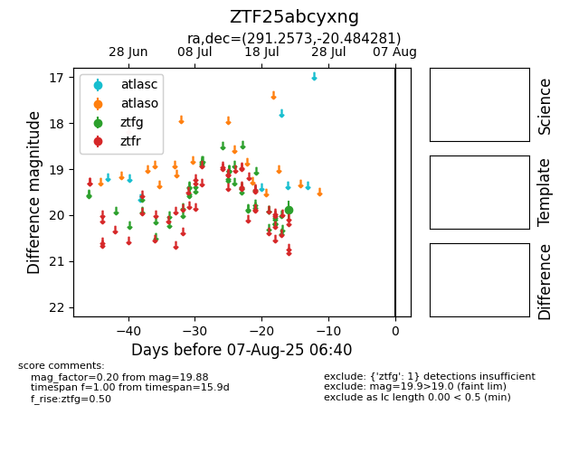

Target ZTF25abcyxng at 2025-08-06 17:45, see:
FINK: fink-portal.org/ZTF25abcyxng
Lasair: lasair-ztf.lsst.ac.uk/objects/ZTF25abcyxng
ALeRCE: alerce.online/object/ZTF25abcyxng
alt names
ZTF25abcyxng (ztf,fink)
coordinates:
equatorial (ra, dec) = (291.2573,-20.48428)
galactic (l, b) = (17.8885,-16.33970)
photometry
last ztfg=19.88
1 ztfg detections
